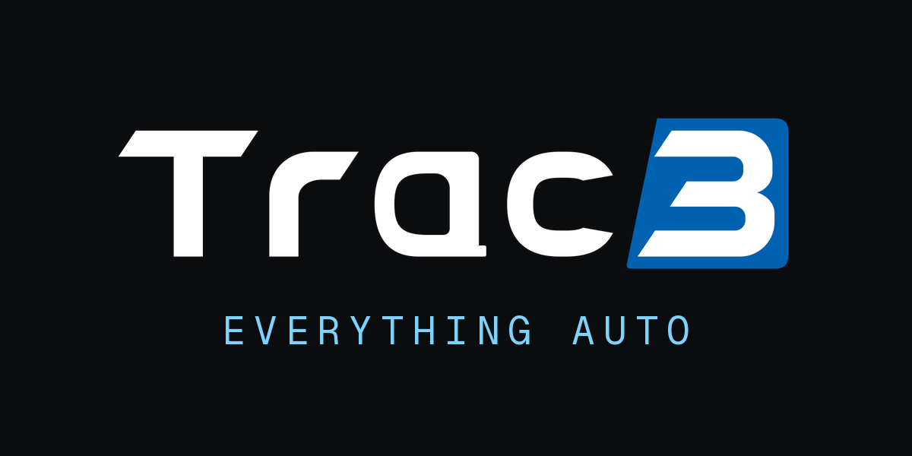

Short version: your stuff lives on your phone. No ads, no tracking, no account.
Cars, plates, dates, photos, documents, the Wallet, reminders, journeys, costs, calendar and showcase drafts are saved inside Trac3 on this phone. There is no Trac3 account and no copy on our servers.
The camera is only used when you take a photo, scan a document or record dashcam. Reading text from photos and PDFs (OCR) happens on the phone. Dashcam uses only the main rear-facing camera, pointed at the road, never the cabin. Clips stay on the phone: by default old ones are deleted after 24 hours, or you can choose in Dashcam > Clips to keep them for a set time or until you delete them.
Only used when you tap the mic. Typing by voice uses your browser or phone’s speech service, which may send the audio to Google to turn it into text. Mechanic voice notes are sent to our Cloudflare Worker to be transcribed and are not kept.
Your location stays on your phone. Trac3 only uses it to find nearby fuel and to record your journeys. It is never sold, never shared and never used for anything else. To get fuel prices, only the map point of your search is sent to our Worker, which doesn’t keep it.
Location is used while you record a journey, plan a route or look up fuel. If you turn on auto journeys in the Android app, Trac3 uses location and Bluetooth (to see when you’re in your car) in the background. Searching for Bluetooth devices only lists nearby names on your phone; nothing is sent anywhere. Journeys are saved on the phone. Place names and routes are looked up with OpenStreetMap services (Photon, OSRM, postcodes.io), which receive the map point or place you search for.
MOT history, tax status and vehicle details: your plate is sent to our Worker, which asks the DVSA and DVLA. Fuel finder: a map point or postcode is sent to get nearby prices. Garage finder: the garage name and postcode are sent to find contact details, and an email you add for a garage may be saved so other drivers can find it. We don’t keep plates or locations.
Performance runs are saved on the phone. If you choose to compare with other drivers, only make, model and engine are shared with the result, never your plate.
Only when you create one. The report, photos or showcase you choose are uploaded to Cloudflare so the link works. You can delete a link at any time from Share.
Your PIN, passkey, face and fingerprint never leave the phone. Trac3 only gets a yes or no from your phone’s own check.
A backup is a .driv3 file encrypted with your passphrase on the phone. You decide where it goes. We never see the file or the passphrase. If you tap Save to Google Password Manager, the passphrase is saved in your own Google account or browser, not with us.
Buttons for GOV.UK, insurers, comparison sites, parts shops, YouTube and Haynes open those sites, which have their own privacy rules.
Delete a car in the app, or clear Trac3’s storage (or uninstall the app) to remove everything from the phone. To remove a share link, delete it in Share or ask us.
Chris Pearson. Questions about this page can be sent from the Lancaster Electrician site.
Back